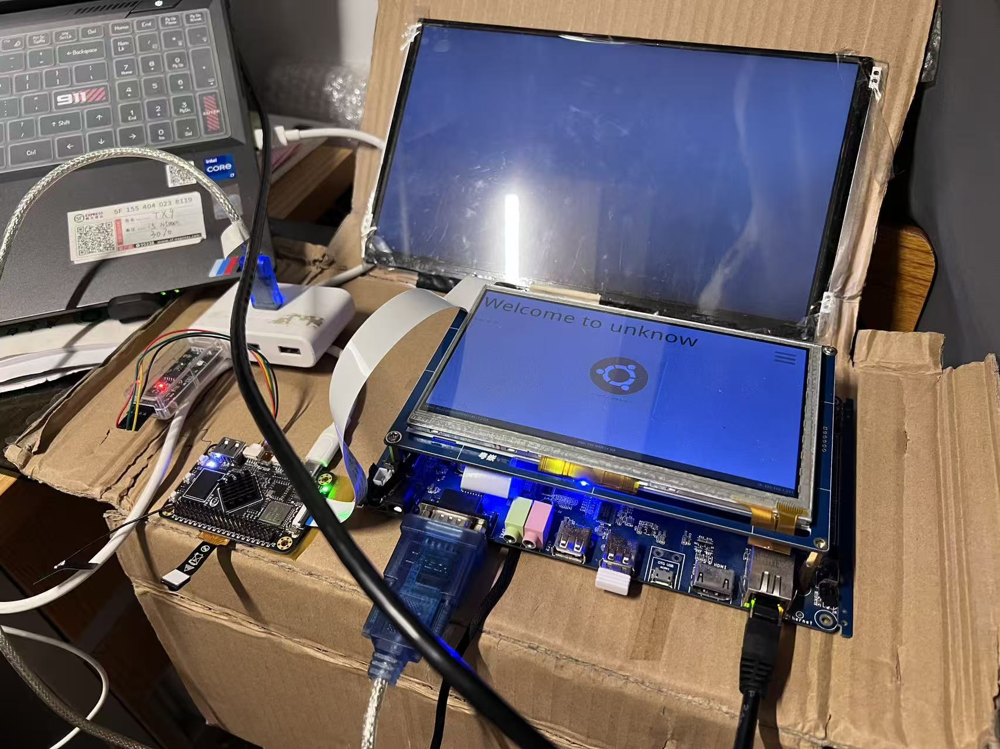
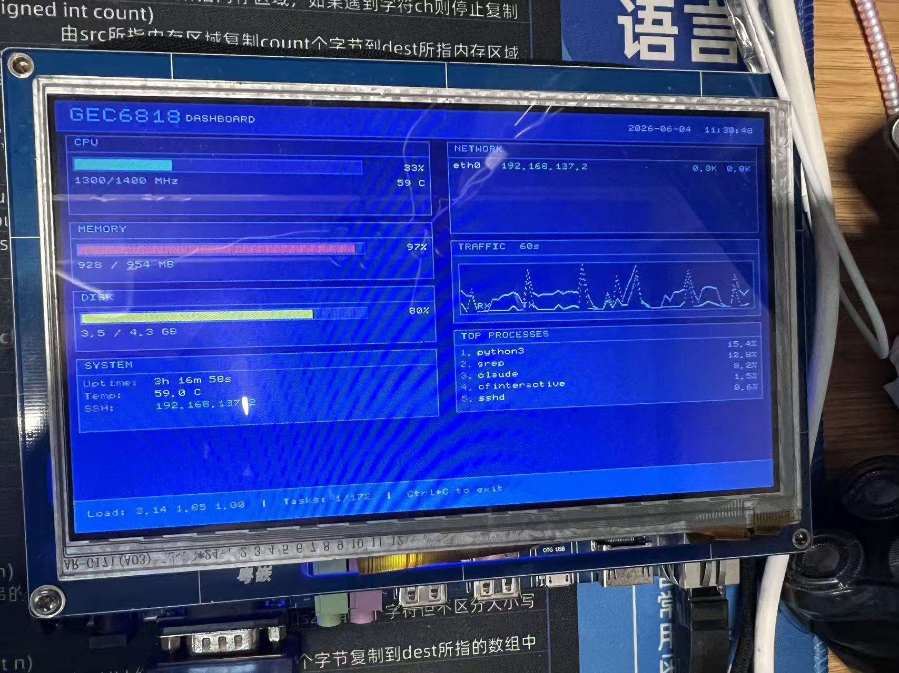
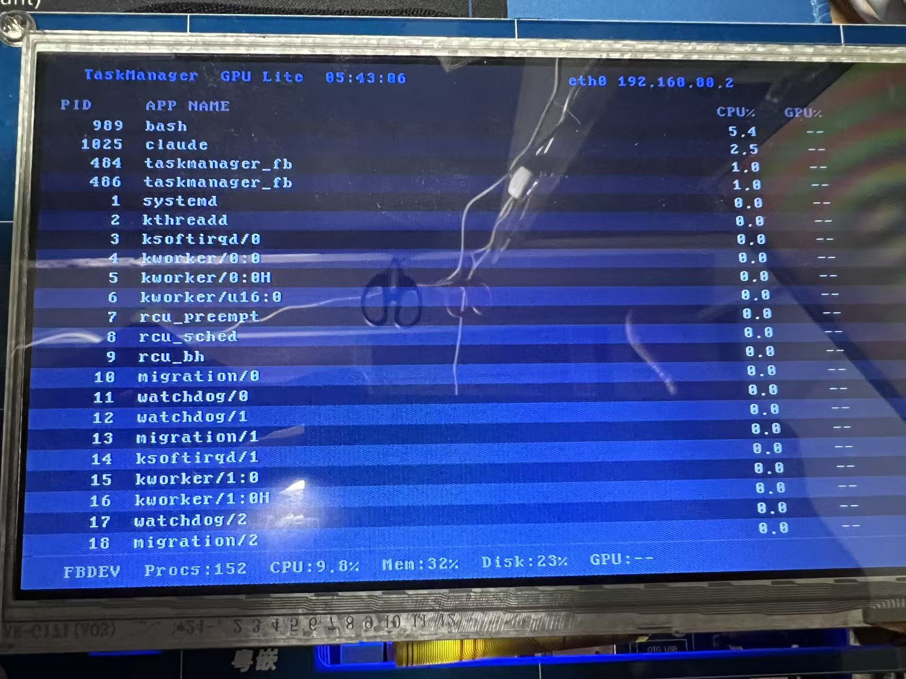
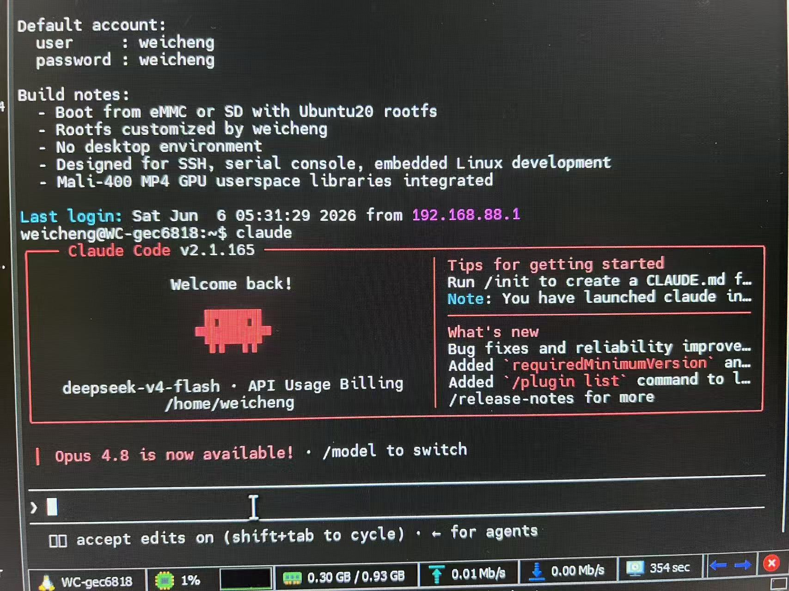

GEC6818 ARM64 Linux 系统移植
基于 S5P6818 Cortex-A53 · ARM64 Linux 移植 · DTS/DTB 板级适配 · LCD/Touch/Audio 外设 bring-up · eMMC eFlasher 烧录 · Mali GPU 用户态驱动 · Ubuntu 20.04 rootfs · 独立启动闭环

GEC6818 开发板运行 ARM64 Linux · LCD RGB 800×480 正常显示
项目动机
项目的起点是一个很实际的需求：在 GEC6818 上播放视频。但原有的 32 位系统非常老旧、依赖库严重缺失，想要运行播放器只能静态编译，而且 SSH 也一直连不上，调试效率很低。正是在解决这些问题的过程中，我注意到 S5P6818 搭载的 Cortex-A53 核心原生支持 ARMv8-A 64 位指令集——板子本身的硬件能力远没有被用起来。
于是我决定不再在 32 位系统上修修补补，而是直接移植一套 ARM64 Linux。以 FriendlyElec Smart6818（同款 SoC）的 ARM64 FriendlyCore 作为参考 BSP，完成从参考板到 GEC6818 的板级差异分析与适配。
项目的目标不只是让系统从 SD 卡启动，还要让 GEC6818 拥有可复刻的 ARM64 Linux 启动方案——最终形成 SD 自动烧录 eMMC、写入 Kernel / DTB / Ubuntu 20.04 rootfs、拔卡后独立启动的完整流程。让这块旧开发板从"依赖旧 32 位资料体系"推进到"可启动、可验证、可复刻的 ARM64 Linux / Ubuntu 20.04 阶段"。
项目亮点
| 内容 | 体现能力 |
|---|---|
| ARM64 Linux 启动链路 | 理解 U-Boot、Kernel Image、DTB、rootfs 的启动关系和匹配逻辑 |
| GEC6818 专属 DTS/DTB 适配 | 能够根据原理图和日志，将参考板 BSP 收敛为目标板专属硬件描述 |
| PMU AXP228 供电适配 | 理解板级供电架构、I2C PMU、IRQ、电源轨和系统稳定性的关系 |
| RGB LCD / AT070TN92 显示适配 | 能够从 LVDS / 1024×600 参考配置切换到 RGB / 800×480 实际屏幕链路 |
| FT5206 触摸适配 | 熟悉 I2C、GPIO 中断、wake 引脚和 Linux input 子系统验证 |
| ALC5621 声卡适配 | 具备 ALSA / ASoC codec、I2S、machine driver 和 DTS 协同调试经验 |
| GPIO / LED / KEY / PWM 蜂鸣器整理 | 能够清理参考板残留配置，并完成基础板级外设 bring-up |
| Mali GPU 用户态驱动栈 | 理解 GPU 驱动分层架构，补齐用户态 EGL/GLES/GBM 库并验证兼容性 |
| eMMC eFlasher 自动烧录 | 理解 SD 维护系统、自动烧录镜像、eMMC 分区和启动介质切换 |
| eMMC BL1 启动通道 patch | 具备低级启动链路分析能力，能定位并修正 eMMC boot 通道字段 |
| Ubuntu 20.04 rootfs 写入与独立启动 | 具备 Kernel / DTB / rootfs 集成能力，完成从 SD 启动到 eMMC 独立启动闭环 |
| 板级 DTS 持续完善 | 逐步补齐 ADC NTC / IrDA / G-Sensor / EEPROM 等外设节点，持续收敛硬件描述 |
| Git Release 阶段化管理 | 能够用版本记录目标、问题、修改、验证方式和阶段结论，具备工程化沉淀意识 |
| AI 辅助测试验证 | 部署 Claude Code + Deepseek 搭建自动化测试环境，用于编译验证、启动日志分析与回归测试 |
我的主要工作
本项目基于 FriendlyElec Smart6818 ARM64 FriendlyCore 作为参考 BSP，我主要完成 GEC6818 开发板的板级差异适配：
- 从启动链路入手，验证镜像中 boot 组件、Kernel、DTB、rootfs 的匹配关系
- 修正 U-Boot 阶段 DTB 加载路径，解决 Kernel panic
- 新建 GEC6818 专属 DTS 文件，将板级硬件差异系统化收敛到统一板级描述
- 根据原理图确认 PMU 为 AXP228，修正设备树中 I2C 控制、IRQ 和电源轨配置
- 将显示链路从 LVDS / 1024×600 适配为 RGB / AT070TN92 / 800×480
- 添加 LCD_EN GPIO、PWM 背光和 RGB pinctrl 配置
- 修正 FT5206 触摸的 I2C bus、INT GPIO、WAKE GPIO 配置
- 根据原理图修正网口 PHY 地址，建立正确的 MAC-PHY 硬件拓扑
- 整理声卡 codec、接口关系和板级连接的设备树与驱动匹配框架
- 制作 SD eFlasher 烧录卡，替换 GEC6818 专用 U-Boot，打通 eMMC 自动烧录流程
- patch eMMC BL1 启动通道字段，修复低级启动链路
- 将 Kernel Image、GEC6818 DTB、Ubuntu 20.04 rootfs 写入 eMMC，实现独立启动
- 补齐 Mali GPU 用户态驱动栈，从参考系统中提取并验证 ARM64 Mali 用户态库
- 持续完善 DTS，新增 ADC NTC 热敏电阻、IrDA 红外接收、G-Sensor、EEPROM 等节点
- 使用 dmesg、i2cdetect、/proc/device-tree、/proc/bus/input/devices 验证适配结果
系统架构 · 启动链路
项目最终形成两条启动路径：SD 卡直接启动和 SD eFlasher 烧录 eMMC 后独立启动。
路径一：SD 卡直接启动
路径二：SD eFlasher → eMMC 独立启动
新版阶段成果：从 SD 启动到 eMMC 独立启动
在早期版本中，项目已经完成 ARM64 Kernel、GEC6818 DTB 和 FriendlyCore rootfs 的 SD 卡启动验证；新版进一步推进到 eMMC 启动链路。通过制作 SD eFlasher 烧录卡、替换 GEC6818 专用 U-Boot、调整 eFlasher 配置、写入 eMMC 分区、patch BL1 启动通道字段，并安装 GEC6818 Kernel Image、DTB 和 Ubuntu 20.04 rootfs，最终实现拔掉 SD 卡后由 eMMC 独立启动系统。
这代表：
- eMMC 低级启动链路已经打通
- U-Boot 能够从正确介质启动
- Kernel Image 和 GEC6818 DTB 能够被正确加载
- rootfs 已经能进入 Ubuntu 20.04 登录阶段
- 项目从"能启动"推进到"能烧录、能复刻、能独立运行"

SD eFlasher 自动烧录 Ubuntu 20.04 到 eMMC · eMMC 分区写入与验证
版本路线图
项目按 Git Release 阶段化演进，每个版本聚焦一个明确的工程目标：
- v0.0 ARM64 启动基线 完成工具链、WSL2 Ubuntu 20.04 编译环境、SD 启动、U-Boot、Kernel / DTS 基础流程。
- v0.1.0 DTS 第一轮 bring-up 确认 SDMMC、eMMC、USB OTG、AXP228 regulator、panel/backlight 等基础硬件身份。
- v0.2.0 RGB LCD 显示适配 从参考板 LVDS / 1024×600 切换到 GEC6818 RGB / 800×480。
- v0.3.0–v0.3.1 触摸与声卡最小验证 FT5206 触摸适配（i2c_1 / 0x38 / GPIOB26 INT / GPIOB8 WAKE）；ALC5621 声卡最小 bring-up。
- v0.4.0 声卡优化 ALC5621 从 16bit 提升到 24bit，优化 ASoC 配置。
- v0.5.0 GPIO / LED / KEY / PWM 整理 LED、按键、PWM2 蜂鸣器，清理 NanoPi3 / Smart6818 残留配置。
- v0.6.0–v0.6.5 eMMC 启动链路打通 SD eFlasher 自动烧录、eMMC 分区、BL1 patch、Kernel/DTB/Ubuntu 20.04 rootfs 写入，拔卡独立启动。
- v0.7.0 GPU 驱动与板级 DTS 完善 Mali GPU 用户态驱动修复，从 FriendlyCore Ubuntu16 提取并验证 ARM64 Mali 库，建立 EGL/GLES 链接方案；修复 HDMI DDC 总线，新增 ADC NTC 热敏电阻、IrDA 红外接收、MMA8653FC G-Sensor、AT24C04 EEPROM 节点，清理 I2C2 遗留配置。
关键难点
难点一：DTB 加载错误导致 Kernel panic — 启动链路的第一道坎
现象
首次启动时，Kernel 在早期阶段直接 panic。从串口日志中捕获到关键信息：Machine model 显示为 FriendlyElec NanoPi3，而非期望的 GEC6818。
排查过程
Step 2 检查 Machine model 字段 → 显示为 NanoPi3 而非 GEC6818 → 怀疑 DTB 加载了错误文件
Step 3 检查 U-Boot 环境变量和 DTB 加载路径 → 确认加载的是 NanoPi3 的 DTB
Step 4 新建
s5p6818-gec6818-rev01.dts，修正 model/compatible 字段，修改 U-Boot DTB 加载配置
修复与验证
新建专属 DTS 文件后，通过 /proc/device-tree/ 验证系统正确识别为 GEC6818：
# cat /proc/device-tree/compatible samsung,gec6818,samsung,s5p6818
难点二：PMU AXP228 板级供电适配 — 供电架构也是板级资源
背景
参考 BSP 的电源管理描述针对的是参考板，不是 GEC6818。通过查阅原理图，我确认 GEC6818 实际使用的 PMU 是 AXP228，它负责多路电压轨输出（3P3_SYS、1P1_ARM、1P5_SYS、1P5_DDR、VCC_RTC 等），并通过 I2C、IRQ、PWRON、PWROK 与 MCU 交互，参与开机、复位和状态管理。
适配内容
IRQ 根据原理图确认 IRQ 引脚连接，修正中断配置
电源轨 按板级实际供电结构描述 regulator 节点，匹配 3P3_SYS / 1P1_ARM / 1P5_SYS / 1P5_DDR / VCC_RTC 等电压域
难点三：LCD RGB 显示链路适配 — 从 LVDS 到 RGB 的跨协议切换
现象
参考 BSP 的显示链路配置为 LVDS / 1024×600，与 GEC6818 上的 AT070TN92 RGB 800×480 屏幕完全不兼容。直接使用参考 DTS 启动后屏幕无任何显示。
排查过程
两块板子虽然使用同一颗 S5P6818 SoC，但 LCD 接口类型（LVDS vs RGB）、分辨率、面板时序参数均不同。需要从显示控制器（DP）的输出模式开始，一路排查到背光 PWM 引脚。
dp_drm_lvds 与 GEC6818 硬件不匹配Step 2 切换显示输出模式 →
dp_drm_lvds → dp_drm_rgbStep 3 在
panel-friendlyelec.c 中添加 AT070TN92 面板时序参数Step 4 恢复 RGB pinctrl 配置，添加 LCD_EN GPIO 和 PWM 背光节点
难点四：FT5206 触摸 probe 失败 — I2C 设备树的引脚级排查
现象
Kernel 启动后 FT5206 触摸驱动未能成功 probe，触摸屏无响应。原设备树中的触摸路径为 i2c_2 + GPIOC16 + one-wire，而 GEC6818 实际使用的触摸芯片和引脚完全不同。
排查过程
我在用户空间用四条命令逐层确认硬件-驱动-系统的连通性：
i2cdetect -y 1 → 扫描 I2C bus，确认设备地址 0x38 存在Layer 2
dmesg | grep ft5206 → 查看驱动 probe 日志，定位失败原因Layer 3
cat /proc/bus/input/devices → 确认 input 设备是否正确注册Layer 4
hexdump /dev/input/event1 → 触摸屏幕，验证事件流数据
修复
将设备树中的触摸节点修正为 GEC6818 实际硬件配置：
i2c_1 + GPIOB26（INT）+ GPIOB8（WAKE）+ FT5206。
难点五：eMMC eFlasher 烧录链路与启动介质切换
早期系统依赖 SD 卡启动，但真正可用的系统不能只停留在 SD 验证阶段。需要把系统写入板载 eMMC，并让板子脱离 SD 卡独立启动。
我制作了 SD eFlasher 烧录卡，替换 GEC6818 专用 U-Boot，调整烧录配置。烧录后通过 lsblk 确认 eMMC 分区结构。在 SD 启动环境下通常 /dev/mmcblk0 是 SD、/dev/mmcblk1 是 eMMC，但仍必须以实际 lsblk 输出为准。这个过程体现我对启动介质、分区布局、烧录流程和风险控制的理解。
难点六：eMMC BL1 启动通道 patch 与 Ubuntu 20.04 rootfs 集成
eMMC 不是简单写入文件就能启动，还涉及低级启动链路。BL1 中存在启动通道字段，GEC6818 eMMC 启动需要将对应字段修正为 eMMC boot 通道。完成 BL1 patch 后，U-Boot 才能进入 EMMC BOOT 路径。
随后还需要写入 GEC6818 Kernel Image、s5p6818-gec6818-rev01.dtb 和 Ubuntu 20.04 rootfs。最终串口出现 Ubuntu 20.04.6 LTS 和 WC-gec6818 login:，说明 rootfs 已经完成启动。这个难点体现我不只是会改 DTS，还能把 bootloader、Kernel、DTB、rootfs、分区和启动介质整合成完整系统。
难点七：Mali GPU 用户态驱动栈补全
背景
此前系统内核侧已经能够成功加载 Mali 驱动，/dev/mali 设备节点存在，Mali-400 MP4 r1p1 驱动 probe 成功。但应用程序（Qt EGLFS、OpenGL ES）仍然无法调用 GPU，因为 GPU 驱动栈由两层构成：
/dev/mali 存在用户层 libMali.so / libEGL.so / libGLESv2.so → 缺失
排查与修复
问题在于 Ubuntu 20.04 rootfs 中缺少 Mali 用户态图形库。应用程序不直接操作 /dev/mali，而是通过 EGL / OpenGL ES 用户态库调用 GPU。即使内核驱动正常，没有 libMali.so，Qt 和 GLES 程序仍然无法使用 GPU。
我从 FriendlyCore Ubuntu16 rootfs（Android sparse image）中提取 ARM64 Mali 用户态库，经过格式转换（simg2img）、挂载提取、ELF 架构验证，确认 libmali-fb.so 为 ELF64 AArch64 动态库，与 Ubuntu 20.04 ARM64 系统兼容，并建立了完整的 EGL / GLES / GBM 链接方案。
应用验证与 AI 辅助开发
系统启动完成后，我在 Ubuntu 20.04 上开发了简单的系统监控和任务管理应用，验证系统调用、显示框架和输入子系统的可用性。

CPU / 内存 / 存储占用监控应用

任务管理器应用
在开发过程中，我还搭建了一套 Claude Code + Deepseek 的 AI 辅助测试环境，用于自动化编译验证、内核启动日志分析和回归测试。这套流程帮助我在频繁的交叉编译和烧录验证中减少了重复劳动，也让我能在调试链路中更快定位问题。

部署 Claude Code 接入 Deepseek 进行编译验证与回归测试
最终成果
项目复盘
做完这个项目后，我对设备树的理解发生了根本变化：驱动能否 probe，不再只是驱动代码的问题，更是硬件描述是否准确的问题。 compatible、reg、interrupt、pinctrl、gpio——只要有一个字段与板卡实际情况不符，驱动就找不到设备。这不是"代码写错了"，而是"描述写错了"。 触摸和 PMU 的适配过程尤其印证了这一点。
通过后续 eMMC 和 Ubuntu 20.04 rootfs 集成，我进一步意识到，嵌入式 Linux 移植不是单点驱动调通，而是一个完整系统工程。只有当 U-Boot、Kernel Image、DTB、rootfs、分区布局、启动介质和烧录流程全部匹配，系统才算真正具备可复刻和可交付价值。
GPU 用户态驱动的修复则让我对驱动栈的分层有了更具体的认识：内核驱动就绪不等于整个子系统可用，用户态库同样是驱动栈的关键组成部分。
回顾全程，我的能力经历了几个层次的升级：从"单个外设 bring-up"升级到"完整启动链路闭环"，从"能跑起来"升级到"能自动烧录、能写入 eMMC、能独立启动"，从"调试某个驱动"升级到"组织一个可验证、可复刻、按 Release 演进的系统移植项目"。这体现了嵌入式 Linux 系统工程意识的逐步建立。
OTA 固件局域网升级 · LAN Over-The-Air Update
系统移植完成后，一个实际问题浮出水面：每次升级都要重新烧录——插 SD 卡、拉镜像、写 eMMC、插拔卡、重启。如果只是修一个 DTB 参数或换一个内核选项，这套流程要走十几分钟，而且一旦量产的设备部署出去，根本不可能派人去现场烧录。
于是我独立启动了 OTA_Learn 项目。当前阶段在局域网环境下跑通最小可用 OTA 流程：开发板通过局域网从 Windows PC 的 HTTP 服务器下载新固件，自动校验、备份、写入 boot 分区，重启后生效。传统"重新烧录"升级方式被替换为"联网下载新固件和脚本实现升级"。
后续如需实现公网远程升级，可以通过内网穿透（如 frp/ngrok）或购买公网服务器部署固件服务来扩展，当前阶段先聚焦局域网 OTA 流程本身的完整性。
OTA_Learn 作为独立仓库记录了这一过程的完整实验日志与踩坑记录： github.com/Weicheng77777777/OTA_Learn
局域网 OTA 升级流程
HTTP 服务器 → wget 下载
manifest + sha256 → 下载 Image
+ DTB → sha256sum
完整性校验 旧固件备份
到 p3 userdata → 新固件写入
p1 boot 分区 → sync
+ reboot
Stage 1：最小可用 OTA 闭环
Stage 1 的目标不是实现完整商用 OTA，而是先跑通最小可用流程。当前阶段只升级 Image 和 s5p6818-gec6818-rev01.dtb，不升级 ramdisk 和 rootfs——因为后两者影响早期启动链路，风险更高。
eMMC 分区布局
| 分区 | 作用 | OTA 角色 |
|---|---|---|
/dev/mmcblk0p1 | boot 分区 | 存放 Image、ramdisk.img、DTB，OTA 写入目标 |
/dev/mmcblk0p2 | rootfs lowerdir | 基础系统，暂不更新 |
/dev/mmcblk0p3 | userdata | 存放 overlay 和 OTA 备份 |
关键设计决策
写时保护 先写
Image.new，sync 后再 mv Image.new Image → 避免写到一半断电导致 p1 损坏双重校验 下载后先
sha256sum -c 校验，写入后再校验一次 → 保证固件完整SSH 修复 OTA 后自动创建
/var/run/sshd + 配置 tmpfiles → 修复首次 OTA 后 SSH 连不上的问题
实际执行输出
[OTA-STAGE1] Base URL: http://192.168.88.1:8000
[OTA-STAGE1] Version: 2026.06.08-stage1
[OTA-STAGE1] Board: WC-gec6818
[OTA-STAGE1] sha256 OK
[OTA-STAGE1] Old Image backed up to: /mnt/ota-data/ota-backup/boot/20260608-115046/Image
[OTA-STAGE1] Old DTB backed up to: .../s5p6818-gec6818-rev01.dtb
[OTA-STAGE1] Image updated
[OTA-STAGE1] DTB updated
[OTA-STAGE1] OTA Stage 1 finished successfully
Stage 1 成果
进阶计划：AB 分区 OTA
Stage 1 实现了"能升级"，但升级过程中如果断电、写坏、重启失败，设备将无法回退。AB 分区方案是解决这个问题的标准工业做法。
active ←→ U-Boot
active_slot ←→ Slot B
standby bootcount
自动回滚 → OTA 失败 → 切回旧槽
后续计划分为两个阶段推进：
active_slot 环境变量 → 根据 active_slot 加载对应分区的 Kernel/DTBStage 2B Kernel 侧添加
bootcount 机制 → 启动失败自动递减，归零后切换 active_slot 回滚Stage 3A ramdisk 分区 A/B 化 → 支持 ramdisk 级别回滚
Stage 3B rootfs A/B 或 overlay 增量升级 → 完整系统级 OTA
AB 分区的核心价值在于：升级过程中断电或写坏，不会导致设备变砖。未激活槽始终保留上一次可用系统，U-Boot 通过 bootcount 检测启动失败后自动切换回旧槽。这套方案在量产设备中广泛应用，也是我下一阶段的重点学习方向。
github.com/Weicheng77777777/OTA_Learn — 记录 OTA 实验全流程、脚本、踩坑和后续 AB 分区计划
github.com/Weicheng77777777/GEC6818-Friendly-Smart6818-64-